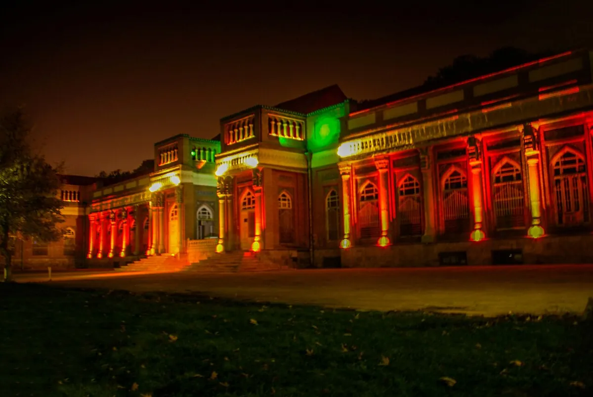

السفر للعلاج · معلومات وتنظيم قبل المغادرة
السياحة العلاجية في مشهد: ابدأ بالتقييم الطبي قبل السفر

إذا كنت تفكر في السفر إلى مشهد لغرض طبي، فالأفضل أن تبدأ بالتواصل مع المستشفى أو المركز المختص قبل شراء التذكرة. أرسل ملخص الحالة والتقارير المطلوبة، واسأل عن الطبيب والقسم والموعد والتكلفة التقديرية وما إذا كان المركز يستطيع استقبال حالتك. وجود مركز في المدينة أو إعلان عن تخصص معين لا يعني أن الإجراء متاح في تاريخ سفرك.
تحقق من المركز وترخيص استقبال المرضى الدوليين
ابحث عن اسم المنشأة في قائمة المراكز التي لديها ترخيص لوحدة استقبال المرضى الدوليين (IPD) المنشورة عبر سامانه گردشگری سلامت وزارت بهداشت. تتغير القائمة وحالة التراخيص؛ لذلك تحقق من الاسم القانوني للمنشأة ومن صلاحية الترخيص قبل تحويل أي مبلغ أو إرسال ملف طبي.
حدد التخصص ثم تواصل مع القسم المعني
لا تبدأ من اسم المستشفى وحده. حدد التخصص والإجراء الذي تريد الاستفسار عنه، ثم اسأل هل يوجد طبيب مختص يستقبل حالات مشابهة، وما التقارير والفحوص التي يحتاج إليها للتقييم الأولي. يمكنك مراجعة الأدلة الخاصة بـ مستشفيات مشهد ومراكز علاج الخصوبة وعلاج الأورام وجراحة القلب.
أرسل ملفاً طبياً واضحاً وآمناً
جهّز ملخصاً طبياً حديثاً، ونتائج الفحوص والصور الأصلية عند الحاجة، وقائمة الأدوية والحساسيات. اسأل المستشفى عن اللغة وصيغة الملفات وقناة الإرسال المعتمدة. لا تنشر التقارير أو بيانات الهوية في مجموعات عامة، ولا تعتبر الترجمة الآلية بديلاً عن ترجمة طبية مؤهلة عندما يطلبها المركز.
لا تشترِ التذكرة قبل تأكيد الموعد
اطلب من الجهة الطبية تأكيداً مكتوباً يوضح اسم القسم والطبيب أو الفريق المعني، وموعد المراجعة إن تم قبوله، والفحوص المطلوبة، وما إذا كانت هناك حاجة إلى تقييم حضوري قبل اتخاذ القرار. المراجعة عن بُعد قد تساعد في معرفة الخطوة التالية، لكنها لا تضمن قبول الحالة أو تحديد علاج نهائي أو نتيجة متوقعة.
افصل بين التكلفة الطبية وتكلفة السفر
اطلب تقديراً من المستشفى يوضح ما يشمله السعر وما قد يضاف إليه، مثل الفحوص أو الإقامة أو المستلزمات أو المتابعة. واحسب بشكل منفصل تذاكر السفر والإقامة والمرافق والنقل والاتصالات. لا تعتمد على سعر منشور في إعلان أو على تجربة مريض آخر؛ فالتكلفة تتحدد بعد مراجعة الحالة والخطة الطبية.
ما الذي يمكن أن أساعدك في تنسيقه؟
أنا حسين، ويمكنني مساعدتك في الاستفسار عن خيارات الإقامة والنقل والتواصل غير الطبي باللغة العربية عند توفر الخدمة. لا أقدم تشخيصاً أو رأياً علاجياً، ولا أضمن قبول الحالة أو موعداً أو تكلفة أو نتيجة. جميع القرارات الطبية تصدر عن الطبيب والمنشأة المرخصة، ويجب تأكيد تفاصيل الخدمات اللوجستية والسعر قبل الاتفاق.
قبل العودة إلى بلدك
اطلب من الفريق الطبي ملخصاً طبياً وتعليمات مكتوبة بشأن الأدوية والمتابعة والسفر، واسأل متى تكون العودة مناسبة لحالتك. لا تحجز رحلة عودة اعتماداً على مدة عامة أو تجربة شخص آخر.
للتخطيط العملي، راجع وثائق السفر للعلاج والاستشارة الطبية عن بُعد ومتطلبات الدخول حسب الجنسية وخيارات الإقامة في مشهد.
أسئلة شائعة
هل كل مستشفى في مشهد يستقبل المرضى الأجانب؟
لا. تحقق من وجود ترخيص IPD سارٍ في القائمة الرسمية ومن قدرة القسم المطلوب على استقبال حالتك.
هل الاستشارة عن بُعد تعني أن العلاج مؤكد؟
لا. قد تساعد في مراجعة الملف وتحديد الخطوة التالية، لكن القرار النهائي يحتاج إلى تقييم الطبيب وقد يتطلب فحصاً حضورياً.
هل يمكن معرفة التكلفة قبل السفر؟
يمكن طلب تقدير أولي مكتوب، لكن السعر النهائي قد يتغير بعد الفحص وتحديد الخطة الطبية.
إذا كنت تخطط للسفر للعلاج أو تحتاج إلى ترتيب الإقامة والنقل، أرسل التفاصيل اللوجستية وسأراجع معك ما يمكن تنسيقه دون التدخل في القرار الطبي. تواصل مع حسين عبر واتساب